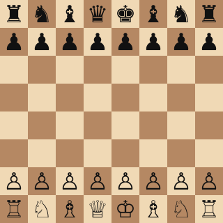

Что такое шахматы

Шахматы — настольная логическая игра для двух соперников. Она проходит на квадратной доске из 64 клеток, у каждого игрока по 16 фигур: белые и чёрные. Цель игры — поставить мат королю противника, то есть атаковать его так, чтобы ему некуда было уйти.
В шахматах нет случайности: нет кубиков и карт, всё решают расчёт, память и умение планировать. Поэтому шахматы часто называют одновременно игрой, спортом и искусством. Международная шахматная федерация (FIDE) объединяет почти две сотни национальных федераций.
Сегодня играть можно где угодно: за доской в клубе, на турнире или онлайн против живых соперников и компьютерных программ.
Почему я люблю шахматы
Я играю в шахматы со школы. Больше всего мне нравится, что каждая партия уникальна: даже после нескольких ходов позиция может оказаться такой, которая никогда раньше не встречалась. Шахматы учат думать на несколько шагов вперёд и отвечать за свои решения.
Что дают шахматы
- тренируют память и внимание;
- учат логически рассуждать и планировать;
- развивают терпение и умение спокойно проигрывать;
- помогают находить новых друзей по всему миру.
С чего начать
- Выучить, как ходят фигуры — об этом страница «Фигуры и правила».
- Разобраться со специальными ходами: рокировкой, взятием на проходе, превращением пешки.
- Решать простые задачи «мат в один ход».
- Сыграть первые партии онлайн, например на Lichess — это бесплатно.
- Почитать о великих шахматистах на странице «История и чемпионы».
Интерактив
Выберите цвет фона страницы:
Узнать сегодняшнюю дату:
А во вкладке браузера всё время идут часы — как шахматные, только без флажка.